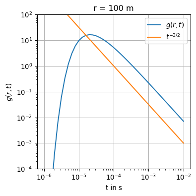
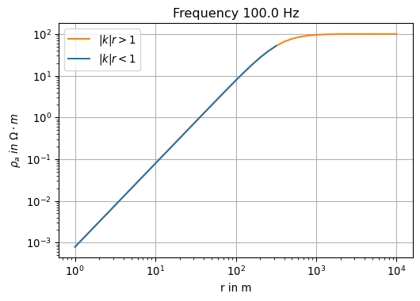
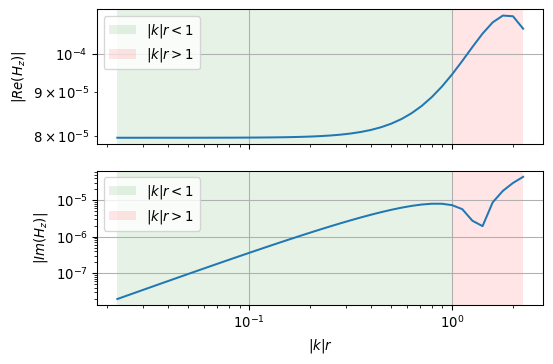

In this chapter, we will consider finite sources in unbounded media. In geo-electromagnetic applications, magnetic dipoles, electric dipoles, long grounded cables, and large loops are used as sources.
However, until now, we have studied induction in a source-free, uniform region, where we have coupled the source current contribution by boundary conditions, such as an inducing uniform, plane wave magnetic field in the Air halfspace.
We will address the following topics:
Polarization vectors
Potentials
Gauge conditions
Green’s function of the uniform full-space
Electric and magnetic dipole sources in full-space.
7.1 Polarization vectors
In the absence of matter, we observe that
\[
\mathbf d - \varepsilon_0 \mathbf e = \mathbf 0
\]
and
\[
\mu_0^{-1} \mathbf b - \mathbf h = \mathbf 0.
\]
When the differences are non-zero, then we observe the response of matter. We define the electrical polarization\(\mathbf p\)\[
\mathbf p = \mathbf d - \varepsilon_0 \mathbf e
\]
and the magnetic polarization or magnetization \(\mathbf m\)
\[
\mathbf m = \mu_0^{-1} \mathbf b - \mathbf h
\]
The polarization vectors \(\mathbf p\) and \(\mathbf m\) are parallel and proportional to \(\mathbf e\) and \(\mathbf h\), resp.
We are able to quantify the polarization properties by the electrical susceptibility \(\chi_e\) and magnetic susceptibility \(\chi_m\). The latter is often referred to as the magnetic susceptibility \(\kappa\).
We define
\[
\mathbf p := \chi_e \varepsilon_0 \mathbf e = \mathbf d - \varepsilon_0 \mathbf e
\]
and likewise
\[
\mathbf m := \chi_m \mathbf h = \mu_0^{-1} \mathbf b - \mathbf h.
\]
It follows for the relative dielectric permittivity
\[
\varepsilon_r = 1 + \chi_e
\]
and for the relative magnetic permeability
\[
\mu_r = 1 + \chi_m = 1 + \kappa.
\]
To implement technical sources, we separate the polarization into induced (superscript \(i\)) and external (superscript \(s\)) contributions to the observed fields:
\[
\mathbf p = \mathbf p^i + \mathbf p^s = \mathbf d - \varepsilon_0 \mathbf e.
\]
Now, we extend our definitions to the frequency domain:
\[
\mathbf J_m^s := i \omega \mu_0 \mathbf M^s
\]
and
\[
\mathbf J_e^s := i \omega \mathbf P^s .
\]
Example
We consider a magnetic dipole at the point \(\mathbf r_0 = [0, 0, -h]^\top, h > 0\).
The point of observation is at \(\mathbf r = [x, y, z]^\top\).
The location of the dipole can now be pinned to \(\mathbf r_0\) using a Dirac delta function.
We obtain
\[
\mathbf M^s(\mathbf r) = \mathbf m \, \delta(\mathbf r - \mathbf r_0)
\]
with \(\mathbf m\) the oriented magnetic dipole moment. The dipole moment has the physical dimension of \([\mathbf m] =\) A\(\cdot m^2\). It can be interpreted as a current \(I\) measured in A enclosing a surface measured in \(m^2\).
As a vector quantity, the dipole moment has a direction. Its direction is given by the unit vector normal to the surface of the enclosed area.
A useful special case arises when the dipole is aligned with one of the Cartesian axes.
This way, we can define a vertical or horizontal dipole.
7.2 Electromagnetic potentials
Let’s assume that electric and magnetic fields originate from either a magnetic or an electric source, i.e.,
Since the divergence of \(\mathbf H_e\) and \(\mathbf E_m\) are zero, we can express both fields by the curl of an arbitrary vector field according to 7.1. However, this vector field must fulfill Maxwell’s equations. The following ansatz employing the vector potentials \(\mathbf F\) and \(\mathbf A\) meets this requirement:
\[
\begin{align}
\mathbf E_m & = -\curl \mathbf F \\
\mathbf H_e & = \phantom{-} \curl \mathbf A.
\end{align}
\]
It follows
\[
\begin{align}
\curl \mathbf H_m & = -(\sigma + i \omega \varepsilon) \curl \mathbf F \\
\curl \mathbf E_e & = -i \omega \mu \curl \mathbf A
\end{align}
\]
from which we obtain
\[
\begin{align}
\mathbf H_m & = -(\sigma + i \omega \varepsilon) \mathbf F - \grad V \\
\mathbf E_e & = -i \omega \mu \mathbf A - \grad U
\end{align}
\]
because
\[
\curl \nabla u = \mathbf 0
\]
for any scalar function \(u: \mathbb R^3 \mapsto \mathbb R\).
The scalar potentials \(V\) and \(U\) are referred to as magnetic and electrical scalar potential, resp.
7.3 The curl-curl equation for the potentials
Let’s insert the potentials into Maxwell’s equations.
\[
\begin{align}
-\laplacian \mathbf F + \nabla \divergence \mathbf F + i \omega \mu (\sigma + i \omega \varepsilon) \mathbf F + i \omega \mu \grad V & = + \mathbf J^s_m \\
-\laplacian \mathbf A + \nabla \divergence \mathbf A + i \omega \mu (\sigma + i \omega \varepsilon) \mathbf A + i \omega \mu \grad U & = + \mathbf J^s_e
\end{align}
\]
7.4 The vector Helmholtz equations for the potentials
Question: How to get rid of \(V\) and \(U\)?
We choose the arbitrary scalar potential \(V, U\) such that it cancels with the expression \(\divergence \mathbf F\) and \(\divergence \mathbf A\), resp.
\[
\begin{align}
\grad \divergence \mathbf F & = - i \omega \mu \grad V \\
\divergence \mathbf F & = - i \omega \mu V
\end{align}
\]
and obtain
\[
-\laplacian \mathbf F + i \omega \mu (\sigma + i \omega \varepsilon) \mathbf F = + \mathbf J^s_m.
\] or short \[
\laplacian \mathbf F + k^2 \mathbf F = -\mathbf J^s_m, \qquad k^2 = -i \omega \mu (\sigma + i \omega \varepsilon).
\]
Self study
Repeat the steps above for the case of \(\mathbf A\).
Summary
We have eliminated the scalar potentials \(V\) and \(U\) by use of the Lorenz gauge.
The vector potentials are solutions to
\[
\laplacian \mathbf F + k^2 \mathbf F = -\mathbf J^s_m
\tag{7.2}\]
and
\[
\laplacian \mathbf A + k^2 \mathbf A = -\mathbf J^s_e.
\tag{7.3}\]
These equations are called inhomogeneous Helmholtz equations.
Note that the vector potentials are aligned with the direction of the source current densities!
7.5 Solutions of the inhomogeneous Helmholtz equation
We now want to find solutions to the inhomogeneous vector Helmholtz equations.
Let’s consider the potential \(\mathbf A\) as defined in 7.3.
To obtain a solution, we take the following steps:
transform the expressions into the Fourier wave number domain
solve the algebraic equation
transform back into space domain
First, we need a useful definition of the Fourier transform. We follow a similar notation like that given in 3.2, but instead of time and angular frequency we choose as variables the Cartesian coordinates \(x, y, z\) and the corresponding wave numbers \(k_x, k_y, k_z\).
We define the 3-D Fourier transform pair
\[
\begin{align}
\tilde{\mathbf A}(k_x, k_y, k_z)
& = \iiint\limits_{-\infty}^\infty \mathbf A(x,y,z) e^{-i(k_x x + k_y y + k_z z)}\, \mathrm d x \mathrm d y \mathrm d z \\
\mathbf A(x,y,z) & = \frac{ 1 }{(2 \pi)^3 } \iiint\limits_{-\infty}^\infty \tilde{\mathbf A}(k_x, k_y, k_z) e^{+i(k_x x + k_y y + k_z z)} \, \mathrm d k_x \mathrm d k_y \mathrm d k_z
\end{align}
\]
Also required are the differentiation, convolution, and linearity properties of the Fourier transform.
We recognize that in a Cartesian coordinate system
\(\tilde{\tilde{G}}\) is the 3-D Fourier transform of what we will later refer to as Green’s function.
We can obtain \(\mathbf A\) directly in the spatial domain by evaluating a 3-D convolution integral, since 7.4 is a multiplication in the wave number domain by exploiting the convolution property of the Fourier transform. Unfortunately, we still have not found an expression for \(G\).
To this end, let’s consider a PDE similar to 7.3. The differences are important: First, the solution to the PDE is a scalar function \(G\), second, the right-hand side of the equation is a Dirac impulse in space.
We depart from
\[
\laplacian G + k^2 G = -\delta(x) \delta(y) \delta(z)
\tag{7.5}\]
We take steps 1 and 2 as outlined above and obtain
\[
g(r, t) = \frac{1 }{4 \pi r} \delta(t - r / c)
\]
The sign is chosen such that causality is guaranteed, i.e.,
\[
g(r, t) = 0 \text{ for } t < 0.
\]
The result obtained above is called the retarded potential.
7.6.2 Quasi-static approximation
For moderate to high conductivities and/or low frequencies, we have introduced the quasi-static approximation, which justifies that displacement currents may safely be neglected in geo-electromagnetic applications.
We start from the Green’s function under quasi-static approximation:
To obtain the time-domain Green’s function, we apply the Laplace transform, which is as an integral transform similar to the Fourier transform, except that the former is restricted to transformations of functions of \(t\) with \(t \ge 0\). This is in accordance to the causality requirement stated above.
With the Laplace variable \(s := i \omega\) we rewrite
\[
u(t) = \begin{cases} 0 & t < 0 \\ 1 & t > 0. \end{cases}
\]
7.6.3 Numerical experiments with the time-domain Green’s function
We implement the Green’s function in Python and plot it as a function of time or source-receiver-offset, resp.
At first, let’s calculate the Green’s function at a fixed distance of \(r=100\) m for a time range of \(t \in [10^{-6}, 10^{-2}]\) seconds.
The late time asymptotic \(g(r,t) \sim t^{-3/2}\) as \(t \to \infty\) is indicated as a straight line in the log-log plot.
Show the code
import numpy as npimport matplotlib.pyplot as pltdef green(sigma, r, t): mu = np.pi *4e-7 g = np.sqrt(mu * sigma) / (2* np.pi * t)**1.5*\ np.exp(-0.25* mu * sigma * r**2/ t)return gsigma =0.01r = np.logspace(start=0, stop=4, num=41, endpoint=True)t = np.logspace(start=-6, stop=-2, num=41, endpoint=True)rfix =100tfix =1e-6g_t = [green(sigma, rfix, tt) for tt in t]g_r = [green(sigma, rr, tfix) for rr in r]fig, ax = plt.subplots(1, 1, figsize=(4,4), layout='constrained')ax.loglog(t, g_t, label=r'$g(r,t)$')ax.loglog(t, 1e-6* t**(-1.5), label=r'$t^{-3/2}$')ax.set_ylim((1e-4, 1e2))ax.set_xlabel('t in s')ax.set_ylabel(r'$g(r,t)$')ax.set_title("r = "+str(rfix) +" m")ax.grid(True)ax.legend()

The following animation shows the interplay between the spatial decay of the Green’s function with time on the left, and the evolution of the Green’s function evaluated at a fixed point in space on the left.
Note the red dots and the red horizontal lines which links both subfigures to each other.
7.7 The fields of a dipole source in full-space
If we compare 7.5 and 7.2, we recognize the similarity of both PDEs. More specifically, if we would be able to orientate \(\mathbf J\) in such a way that it would be aligned to one of the Cartesian axis, then
\[
\mathbf J_m^s(\mathbf r) = i \omega \mu \mathbf m \delta^3(\mathbf r)
\]
\[
\begin{align}
E_x & = +i \omega \mu m \frac{\sin\varphi}{4 \pi r^2}(1 + i k r) \exp(-i k r) \\
E_y & = -i \omega \mu m \frac{\cos\varphi}{4 \pi r^2}(1 + i k r) \exp(-i k r)
\end{align}
\]
A useful expression for an arbitrary orientation of the dipole is given by
\[
\mathbf E(\mathbf r) = -\frac{i \omega \mu}{4 \pi r^3} (1 + i k r) \exp(-i k r) \mathbf m \times \mathbf r,
\]
where the components of \(\mathbf E\) depend on both the direction of the dipole moment and the direction to the source.
Check:
With
\[
\mathbf m =
\begin{bmatrix}
0 \\ 0 \\ m
\end{bmatrix}
\]
and
\[
\mathbf r =
\begin{bmatrix}
x \\ y \\ z
\end{bmatrix}
\] we obtain \[
- \mathbf m \times \mathbf r =
\begin{bmatrix}
my \\ -mx \\ 0
\end{bmatrix} =
\begin{bmatrix}
m r \sin\varphi \\ -m r \cos\varphi \\ 0
\end{bmatrix}
.
\]
Note
Looking in the direction of the positive \(z\)-axis of a right-handed coordinate system, the induced electric field is oriented counter-clockwise, when \(\mathbf m\) is oriented in positive \(z\)-direction.
7.7.2 Magnetic field
For the magnetic field, we need
\[
\mathbf H = -\sigma \mathbf F + \frac{1}{i\omega\mu} \grad \divergence \mathbf F = \frac{1}{i\omega\mu} \left(
k^2 \mathbf F + \grad\divergence \mathbf F
\right).
\]
The \(\nabla\cdot\)-operator requires the calculation of \(\partial_z F_z\), whereas the gradient requires to provide all partial derivatives of \(\partial_z F_z\) with respect to \(r\) and \(z\).
\[
\grad f = \partial_r f \mathbf e_r +
\frac{1}{r} \partial_\varphi f \mathbf e_\varphi +
\partial_z f \mathbf e_z.
\]
In our case we need to calculate
\[
\divergence \mathbf F = \partial_z F_z.
\]
To compute the derivatives, we use sympy:
Show the code
from sympy import diff, symbols, sqrt, pi, exp, I, simplify, Derivative, Matrixx, y, z, r, omega, mu, sigma, m = symbols('x y z r omega mu_0 sigma m', real=True)k = symbols('k')Fz = I * omega * mu * m / (4* pi * r) * exp(-I * k * r)print('Fz = ')Fz
Fz =
\(\displaystyle \frac{i m \mu_{0} \omega e^{- i k r}}{4 \pi r}\)
Next, we implement an expression for \(\divergence \mathbf F\):
\(\displaystyle \frac{m \mu_{0} \omega z \left(k r - i\right) e^{- i k r}}{4 \pi r^{3}}\)
The chain rule can be implemented by a lambda function chain which first substitutes \(r\) by the square root, forms the derivative, and finally substitutes all square root expressions by \(r\) or powers thereof.
\(\displaystyle \frac{m \left(k^{2} r^{4} - k^{2} r^{2} z^{2} - i k r^{3} + 3 i k r z^{2} - r^{2} + 3 z^{2}\right) e^{- i k r}}{4 \pi r^{5}}\)
We can generalize using the following notation:
\[
\mathbf H(\mathbf r) = \frac{1}{4 \pi r^3} \left[
\frac{\mathbf m \cdot \mathbf r}{r^2} (3 + 3 i k r - k^2 r^2) \mathbf r - (1 + i k r - k^2 r^2) \mathbf m
\right] e^{-i k r}.
\]
Let’s check the validity on our example.
We introduce the symbolic vector quantities M and R, and implement a lambda function to express the magnetic field with respect to the orientation of the magnetic dipole moment:
Show the code
M = Matrix([0, 0, m])R = Matrix([x, y, z])H =lambda M: (M.dot(R) * (3+ I * k * r - k**2* r**2) * R / r**2- (1+ I * k * r - k**2* r**2) * M) * exp(-I * k * r) / (4* pi * r**3)print('H(M) =')H(M)
H(M) =
\(\displaystyle \left[\begin{matrix}\frac{m x z \left(- k^{2} r^{2} + i k r + 3\right) e^{- i k r}}{4 \pi r^{5}}\\\frac{m y z \left(- k^{2} r^{2} + i k r + 3\right) e^{- i k r}}{4 \pi r^{5}}\\\frac{\left(- m \left(- k^{2} r^{2} + i k r + 1\right) + \frac{m z^{2} \left(- k^{2} r^{2} + i k r + 3\right)}{r^{2}}\right) e^{- i k r}}{4 \pi r^{3}}\end{matrix}\right]\)
This confirms the correctness of our derivation.
7.8 Apparent resistivity
However, geophysics is primarily interested in reconstructing the spatial distribution of electrical conductivity from measured field quantities (inversion). This step is based on a model conception of the spatial conductivity distribution. In general, the conductivity is a function of location with \(\sigma=\sigma(x,y,z)>0\). In the simplest case, we assume that the halfspace or fullspace is a uniform conductor, i.e., \(\sigma= const\). The model of the homogeneous halfspace or fullspace can therefore be completely described by a single number. We now try to determine this number mathematically from the measured field quantities.
This is the simplest form of a geophysical inversion!
We use the impedance to solve the problem. From this we then determine the apparent resistivity.
The following questions will be answered:
Can the concept of impedance be transferred to dipole excitation?
Is it possible to reconstruct the electrical resistivity from the impedance?
What are the differences compared to homogeneous excitation (MT)?
We implement the general equations for the electric and magnetic fields as Python functions E and H, resp.:
Show the code
def E(r, m, f, sigma): mu = np.pi *4e-7 omega =2* np.pi * f iwm =1j* omega * mu alpha = iwm / (4* np.pi) k = np.sqrt(-iwm * sigma) x = r[0] y = r[1] z = r[2] R = np.linalg.norm(r) ikr =1j* k * R E =-alpha / R**3* (1.0+ ikr) * np.exp(-ikr) * np.cross(m, r)return Edef H(r, m, f, sigma): mu = np.pi *4e-7 omega =2* np.pi * f iwm =1j* omega * mu k = np.sqrt(-iwm * sigma) x = r[0] y = r[1] z = r[2] R = np.linalg.norm(r) ikr =1j* k * R k2r2 = k**2* R**2 H = np.exp(-ikr) / (4* np.pi * R**3) * ( np.dot(m, r) / R**2* (3+3* ikr - k2r2) * r- (1+ ikr - k2r2) * m )return H
We check with the parameters defining a VMD in horizontal coplanar configuration oscillating at a frequency of 100 Hz located at the origin of a uniform fullspace:
\(\mathbf r = [100, 0, 0]^\top\) m
\(\mathbf m = [0, 0, 1]^\top\) A\(\cdot m^2\)
\(f = 100\) Hz
\(\sigma = 0.01\) S/m.
Let’s have a look at the electric field evaluated with the function E:
Show the code
r = np.array([100.0, 0.0, 0.0])m = np.array([0.0, 0.0, 1.0])f =100.0sigma =0.01e = E(r, m, f, sigma)Ey = e[1]print(np.array_str(e, precision=2))
We recognize that for a vertically aligned dipole, when observed at the \(x\)-axis, only the \(y\)-component of \(\mathbf E\) and the \(z\)-component of \(\mathbf H\) are non-zero.
Now we try to calculate the impedance from the ratio of two mutually orthogonal components of \(\mathbf E\) and \(\mathbf H\), e.g.,
\[
Z = \frac{ E_y }{ H_z}.
\]
The result is complex number:
Show the code
Z = Ey / Hznp.set_printoptions()np.set_printoptions(precision=2, floatmode='fixed')print('Z = '+str(np.round(Z, 4)))
Z = (0.0049+0.0778j)
For the calculation of the apparent resistivity, we use
Obviously, the value of \(\rho_a\) depends on the frequency and asymptotically approaches the expected full-space value of the resistivity as \(f \to \infty\).
We gain more insight, when we vary the distance to the dipole while keeping the frequency fixed.
Show the code
nr =41x = np.logspace(0, 4, nr, endpoint=True)Rhoa_x = np.array([rhoa(E(np.array([v, 0, 0]),m,f,sigma)[1] / H(np.array([v, 0, 0]),m,f,sigma)[2], f) for v in x])
Is there a consistent explanation for these observations? We look at the induction parameter \(|k|r\) and revisit the parameters from the previous examples.
Show the code
def kr(f, sigma, r): mu = np.pi *4e-7 omega =2* np.pi * freturn r * np.abs(np.sqrt(-1j* omega * mu * sigma))def pos(data, threshold):return np.where(np.array(data) > threshold, data, np.nan)
Show the code
KR = np.array([kr(v, sigma, np.linalg.norm(r)) for v in freq])fig, ax = plt.subplots(1, 1, figsize=(6,4))ax.loglog(freq, KR, color='C1', label=r'|k|r > 1')iind = np.argwhere(KR <1)ax.loglog(freq[iind], KR[iind], color='C0', label=r'|k|r < 1')ax.legend()ax.grid(True)ax.set_ylabel(r'$|k|r$')ax.set_xlabel('f in Hz')ax.set_title('Dipole offset '+str(np.linalg.norm(r)) +' m')ax
With the indicator \(|k|r\) just introduced, it is easier to determine which branch of the asymptotic we are on.
Show the code
KR = np.array([kr(f, sigma, v) for v in x])fig, ax = plt.subplots(1, 1, figsize=(6,4))ax.loglog(x, Rhoa_x, color='C1', label=r'$|k|r > 1$')iind = np.argwhere(KR <1)ax.loglog(x[iind], Rhoa_x[iind], color='C0', label=r'$|k|r < 1$')ax.legend()ax.grid(True)ax.set_xlabel('r in m')ax.set_ylabel(r'$\rho_a~in~\Omega\cdot m$')ax.set_title('Frequency '+str(np.linalg.norm(f)) +' Hz')ax

In contrast to homogeneous excitation, the impedance and thus the apparent resistivity for dipole excitation depends not only on the frequency but also on the distance between the dipole source and the receiver. At \(|k|r \gg 1\) we speak of the far zone. The impedance relationships there are similar to those for the MT. At \(|k|r \ll 1\) we are in the near zone. The induction parameter is small. The low induction number (LIN) methods work in this regime. With the Geonics EM-34, for example, a coil distance of around 10 m is selected at a frequency of 6,400 Hz. The induction parameter for this configuration is less than 1 if the conductivity is sufficiently low.
We check these findings for a range of conductivities.
Show the code
ns =41sigma = np.logspace(-4, 0, ns, endpoint=True)r =10.0f =6400.0KR = np.array([kr(f, v, r) for v in sigma])Hz = np.array([H(np.array([r, 0, 0]), np.array([0, 0, 1]), f, v)[2] for v in sigma])fig, (ax1, ax2) = plt.subplots(2, 1, figsize=(6,4), sharex=True)ax1.loglog(KR, np.abs(np.real(Hz)))ax1.axvspan(KR[0], 1.0, facecolor='green', alpha=0.1, label=r'$|k|r<1$')ax1.axvspan(1.0, KR[-1], facecolor='red', alpha=0.1, label=r'$|k|r>1$')ax1.grid(True)ax1.legend()ax1.set_ylabel(r'$|Re(H_z)|$')ax2.loglog(KR, np.abs(np.imag(Hz)))ax2.axvspan(KR[0], 1.0, facecolor='green', alpha=0.1, label=r'$|k|r<1$')ax2.axvspan(1.0, KR[-1], facecolor='red', alpha=0.1, label=r'$|k|r>1$')ax2.grid(True)ax2.set_xlabel(r'$|k|r$')ax2.set_ylabel(r'$|Im(H_z)|$')ax2.legend()

Figure 7.1: Real and imaginary part of the magnetic field of an oscillating magnetic dipole. The green and red shading indicates the regime for \(|k|r < 1\) and \(|k|r > 1\), resp.
As we can see from Fig. Figure 7.1, the real part of the magnetic field goes to a constant value for \(|k|r \to 0\), whereas the imaginary part shows a straight line in the log-log plot.
For \(|k|r \to 0\), i.e., for very small conductivities, we approach free-space conditions. The magnetic field of a vertical dipole in horizontal co-planar configuration is
\[
H_z = -\frac{ m }{4 \pi r^3 }.
\]
We evaluate this equation with the given values of \(r\) and \(m\). We obtain
On the other hand, for fixed values of \(r\) and \(f\) it is possible to calibrate the instrument such that the reading of the imaginary part of \(H_z\) for low induction numbers yields the desired apparent resistivity.
7.8.1 Instrument error
What about the uncertainty of the readings of such an instrument?
Frequency stability in the instrument is not a problem. The situation is different when measuring the distance between the coils. We therefore finally examine the sensitivity of the magnetic field measurement to inaccuracies in the distance measurement. To do this, we consider the error according to the linear error propagation law